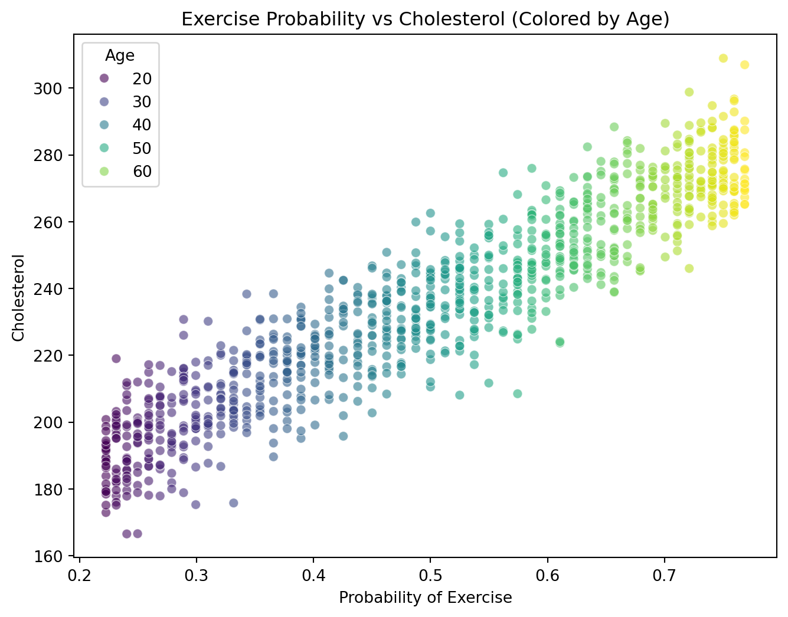

[Causal Inference] 04. Confounding and Backdoor (Part 5)
Simpson’s Paradox Simulation Using DoWhy: Stratification & Refutation
Causal Inference
Author
유성현
Published
January 8, 2026
1 Introduction
이전 포스트들에서 배운 교란(Confounding)과 Back-door Criterion을 실제 코드로 구현해 보는 시간입니다.
특히 심슨의 역설(Simpson’s Paradox) 상황을 시뮬레이션하고, DoWhy 라이브러리의 성향 점수 층화(Propensity Score Stratification) 방법을 통해 올바른 인과 효과를 추정해 봅니다.
2 Python Practice: DoWhy Simulation
이제 위 이론을 바탕으로 DoWhy 라이브러리를 사용해 인과 추론 프로세스를 단계별로 구현해 봅니다.
3 데이터 생성 (Data Generation)
나이(Age)가 운동(Exercise)과 콜레스테롤(Cholesterol) 모두에 영향을 주어, 단순 관찰 시 역설적인 결과가 나오도록 데이터를 생성합니다.
Code
import numpy as npimport pandas as pdimport dowhyfrom dowhy import CausalModelimport matplotlib.pyplot as pltimport seaborn as snsnp.random.seed(42)N =1000# (1) 교란 변수: 나이 (Age)age = np.random.randint(20, 70, size=N)# (2) 처치 변수: 운동 여부 (Exercise, 0 or 1)# 나이가 많을수록 운동할 확률이 높아짐 (교란 발생)prob_exercise =1/ (1+ np.exp(-(age -45) /20))exercise = np.random.binomial(1, prob_exercise)# (3) 결과 변수: 콜레스테롤 (Cholesterol)# 나이가 많으면 콜레스테롤 증가 (+2.0 * Age)# 운동을 하면 콜레스테롤 감소 (True Effect = -10)cholesterol =2.0* age -10* exercise + np.random.normal(150, 10, size=N)df = pd.DataFrame({'Age': age, 'Exercise': exercise, 'Exercise_Prob': prob_exercise, 'Cholesterol': cholesterol})# 데이터 분포 확인 (나이에 따른 색상 구분)plt.figure(figsize=(8, 6))sns.scatterplot( x='Exercise_Prob', y='Cholesterol', data=df, hue='Age', palette='viridis', alpha=0.6)plt.title("Exercise Probability vs Cholesterol (Colored by Age)")plt.xlabel("Probability of Exercise")plt.legend(title='Age')plt.show()

4 단순 비교 (Naive Comparison)
교란 변수를 고려하지 않고 단순히 운동한 사람과 안 한 사람의 평균 콜레스테롤을 비교해 봅니다.
Code
mean_exercise = df[df['Exercise'] ==1]['Cholesterol'].mean()mean_no_exercise = df[df['Exercise'] ==0]['Cholesterol'].mean()naive_effect = mean_exercise - mean_no_exerciseprint("="*50)print(f"1. 단순 평균 비교 (Naive Estimate): {naive_effect:.4f}")print(" -> 운동한 사람의 콜레스테롤이 더 높게 나옴 (심슨의 역설)")print("="*50)
==================================================
1. 단순 평균 비교 (Naive Estimate): 11.5646
-> 운동한 사람의 콜레스테롤이 더 높게 나옴 (심슨의 역설)
==================================================
5 DoWhy를 이용한 인과 추론
5.1 모델 정의 및 식별 (Modeling & Identification)
인과 그래프(Graph)를 정의하고 Back-door 기준을 통해 식별 가능성을 확인합니다.
Code
# 단계 1: 모델 정의 (Causal Graph 생성)df = df.reset_index(drop=True)model = CausalModel( data=df, treatment='Exercise', outcome='Cholesterol', common_causes=['Age'] # 교란 변수 지정)# 단계 2: 식별 (Identification)identified_estimand = model.identify_effect()print(identified_estimand)
Estimand type: EstimandType.NONPARAMETRIC_ATE
### Estimand : 1
Estimand name: backdoor
Estimand expression:
d
───────────(E[Cholesterol|Age])
d[Exercise]
Estimand assumption 1, Unconfoundedness: If U→{Exercise} and U→Cholesterol then P(Cholesterol|Exercise,Age,U) = P(Cholesterol|Exercise,Age)
### Estimand : 2
Estimand name: iv
No such variable(s) found!
### Estimand : 3
Estimand name: frontdoor
No such variable(s) found!
5.2 인과 효과 추정 (Estimation: Stratification)
여기서는 성향 점수 층화(Propensity Score Stratification) 방법을 사용합니다. 나이가 비슷하여 운동할 확률(성향 점수)이 유사한 사람들끼리 묶어서 비교하는 방식입니다.
Code
# 단계 3: 추정 (Estimation)# num_strata=5: 데이터를 성향 점수에 따라 5개 구간으로 나눔estimate = model.estimate_effect( identified_estimand, method_name="backdoor.propensity_score_stratification", method_params={'num_strata': 5, 'clipping_threshold': 5})print("="*50)print(f"2. 인과 효과 추정 (Causal Estimate): {estimate.value:.4f}")print(f" -> 실제 효과 (-10.0)에 매우 근접함")print("="*50)
==================================================
2. 인과 효과 추정 (Causal Estimate): -9.1264
-> 실제 효과 (-10.0)에 매우 근접함
==================================================
6 결과 검증 (Refutation)
구해진 인과 효과가 통계적으로 유의미하고 견고한지 검증하기 위해 가짜 처치(Placebo)와 랜덤 변수 추가(Random Common Cause) 테스트를 수행합니다.
Code
print("\n[검증 시작] 모델이 얼마나 튼튼한지 테스트합니다...")# (1) 가짜 처치 검증 (Placebo Treatment)# 운동 여부를 랜덤으로 섞으면 효과가 0이 나와야 함refute_placebo = model.refute_estimate( identified_estimand, estimate, method_name="placebo_treatment_refuter", method_params={"placebo_type": "permute_treatment"}, n_jobs=1)print(f"\n- Placebo Test (Expected 0): {refute_placebo.new_effect:.4f}")# (2) 랜덤 공통 원인 검증 (Random Common Cause)# 아무 상관 없는 랜덤 변수를 추가해도 원래 효과(-10)가 유지되어야 함refute_random = model.refute_estimate( identified_estimand, estimate, method_name="random_common_cause")print(f"- Random Cause Test (Expected ~ -10): {refute_random.new_effect:.4f}")
[검증 시작] 모델이 얼마나 튼튼한지 테스트합니다...
- Placebo Test (Expected 0): 0.0059
- Random Cause Test (Expected ~ -10): -9.1264
7 최종 시각화 (Visualization)
단순 비교했을 때와 교란 변수를 통제했을 때의 차이를 시각적으로 확인합니다.
Code
plt.figure(figsize=(12, 5))# (왼쪽) 단순 비교 시각화plt.subplot(1, 2, 1)sns.boxplot(x='Exercise', y='Cholesterol', data=df)plt.title(f"Naive Comparison\n(Effect: {naive_effect:.2f})")# (오른쪽) 나이 통제 후 시각화 (회귀선)plt.subplot(1, 2, 2)sns.scatterplot(x='Age', y='Cholesterol', hue='Exercise', data=df, alpha=0.5)# 운동 O/X 별 추세선sns.regplot(x='Age', y='Cholesterol', data=df[df['Exercise']==0], scatter=False, label='No Exercise', color='blue')sns.regplot(x='Age', y='Cholesterol', data=df[df['Exercise']==1], scatter=False, label='Exercise', color='orange')plt.title(f"Controlled Comparison by Age\n(True Effect: -10.0)")plt.legend()plt.tight_layout()plt.show()